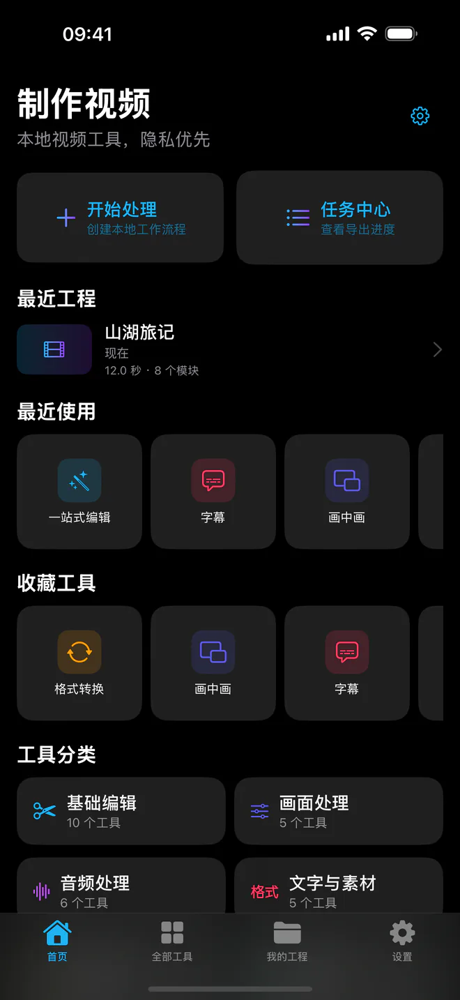
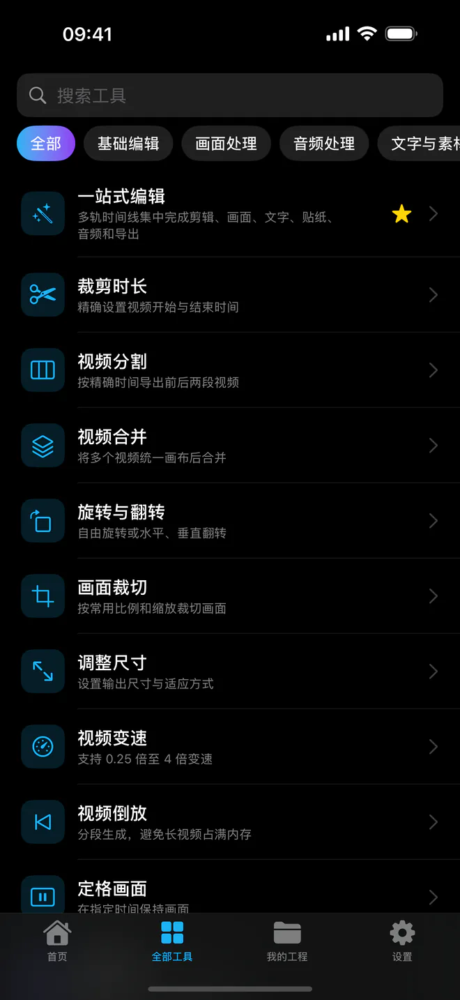
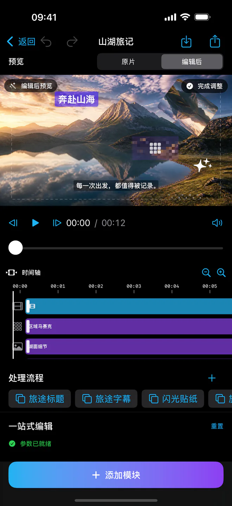
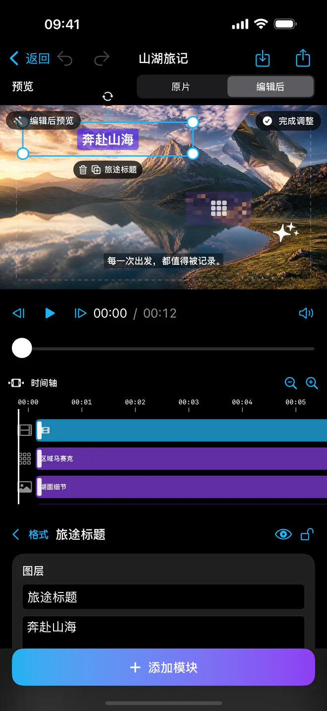
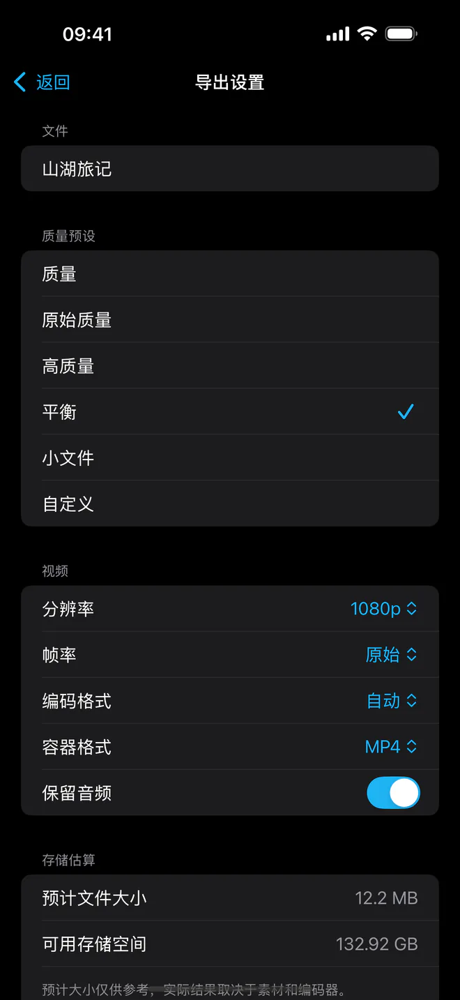
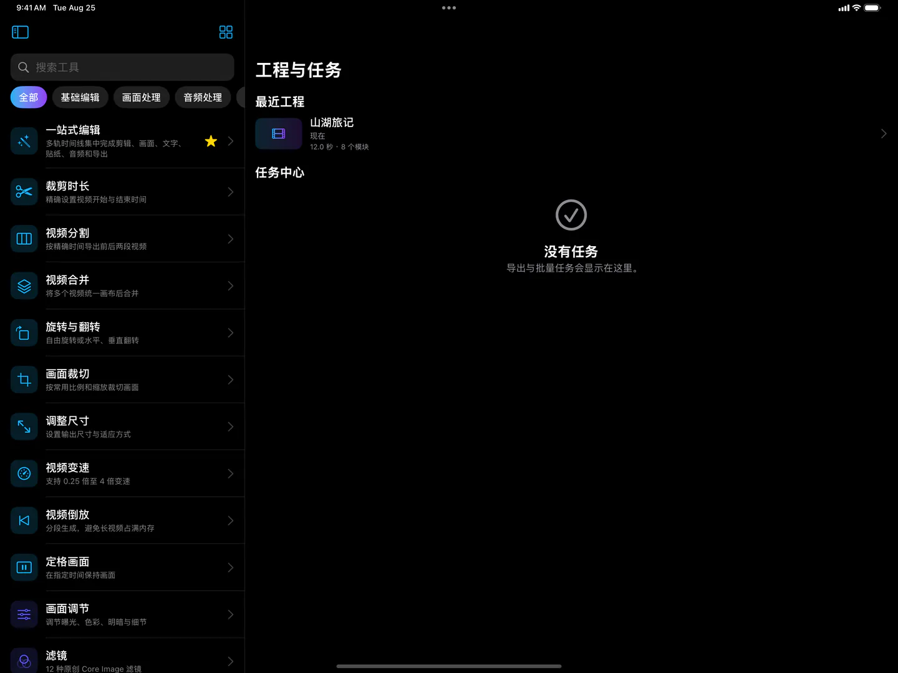
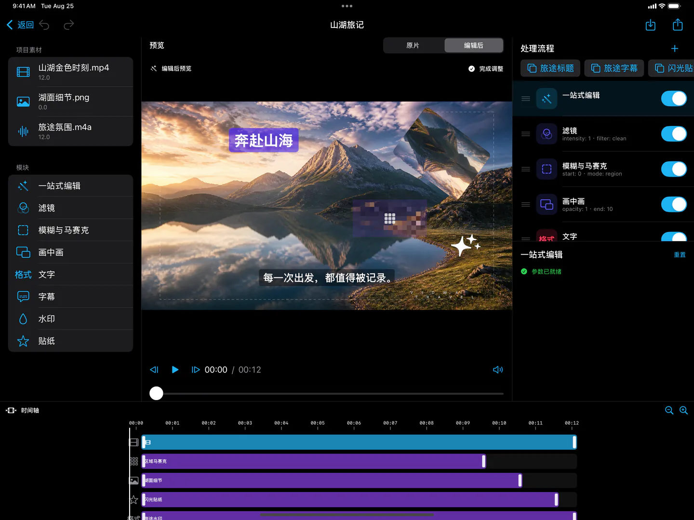

当前版本 v1.0.1 · iPhone 与 iPad · iOS / iPadOS 17.0+
当前版本 v1.0.1 · iPhone 与 iPad · iOS / iPadOS 17.0+ Vidma
以本地化处理为核心，覆盖视频编辑、字幕、音频处理和多任务流，满足拍摄后快速整理、修饰、压制与导出。素材、工程与导出文件默认保存在本地，不会提供给广告服务。

全流程编辑
支持视频裁切、分割、变速、旋转、翻转、反向、定格、分辨率调节与转码。
字幕与文本
支持语音识别字幕、字幕编辑、样式设置、时间轴定位、导入与导出 SRT。
画中画与图层
可添加文字、贴纸、图片/视频图层、区域/全屏模糊和马赛克，支持关键帧与层级管理。
音频编辑
支持提取音频，静音、原音保留、导入音乐叠加、音量调节与淡入淡出。
导出与任务
提供压缩、转换、GIF、封面帧、导出预设和独立批量任务，支持失败恢复与重试。
本地优先与广告隐私
核心功能离线处理，按需授权，默认不上传原始素材。iPhone 与 iPad 版由 Google 广告支持；适用地区先完成 UMP 选择，再由 Apple ATT 询问是否允许个性化广告跟踪，拒绝不影响编辑。
IPHONE & iPad SCREENSHOTS
真实界面展示
以下为 Vidma 真实运行界面，展示工具页、编辑页、图层系统、字幕与导出流程。






